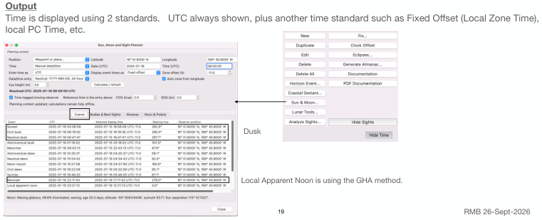

| Previous | Contents | Next |
Altitude sights and coastal navigation · Page 19 of 66
6. Sun, Moon, and Sight Planner “Star Finder” (new feature 2.8.x)
Up to now, the Use Case assumed the ETA location to take evening twilight sights and the specific 3 bodies for 3 body fix. But it can be determined by using the “Star Finder”. To use this form,
Inputs Select Position: Options are Manual input of La and Lo, current boat position, selected Waypoint Position, Select Time input: UTC, Zone Time (excludes Daylight savings, there is no Daylight Savings offshore), PC time may
include Daylight savings of the country Display time: UTC, Fixed offset (aka Zone time), and Zone offset which is calculated based on Longitude)
 |
| Open illustration at full size |
Output Time is displayed using 2 standards. UTC always shown, plus another time standard such as Fixed Offset (Local Zone Time), local PC Time, etc.
| Previous | Contents | Next |